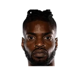
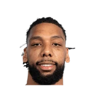

“Ersan will bring us much needed perimeter shooting, floor spacing and roster balance, while the acquisition of a future pick or picks should continue to drive our ability to generate future roster building options. On behalf of the entire organization, I want to thank Jerami for his valuable contributions to our team and for always being the respectable and classy professional that he is.”
What Bryan Colangelo has said about Jerami Grant
Every quote from Bryan Colangelo about Jerami Grant in the archive, newest first. Each one links to its original source.
Quotes per season
2016-172016-17
2016-17
2 quotes“They’ve expressed an interest in Jerami Grant over the course of time. The offers continued to get richer and richer. This led to the right timing from our perspective when the offer became realistic for us to make a move with Jerami, who we viewed as a nice young piece here.”
Related
- Everyone on Jerami Grant32 quotes
- Bryan Colangelo on everyone36 quotes
 Dwane Casey on Jerami Grant7 quotes
Dwane Casey on Jerami Grant7 quotes- Michael Malone on Jerami Grant6 quotes
 Bryan Colangelo on Joel Embiid5 quotes
Bryan Colangelo on Joel Embiid5 quotes- Bryan Colangelo on Furkan Korkmaz4 quotes

Bryan Colangelo on Nerlens Noel4 quotes Bryan Colangelo on Chris Bosh3 quotes
Bryan Colangelo on Chris Bosh3 quotes
Bryan Colangelo on Jahlil Okafor3 quotes- Troy Weaver on Jerami Grant3 quotes